Reptes micro:bit per a cuidar l’entorn i les persones
🏷️ Reptes de disseny amb impacte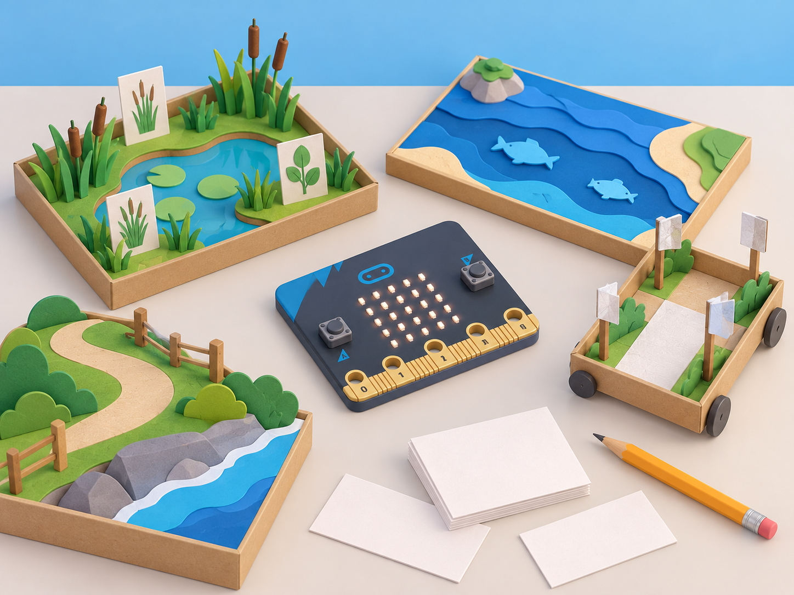
🌱 Situació, repte i intenció
🎯 Aprenentatges i vocabulari
- Analitzar un repte ambiental o de benestar i delimitar què pot comprovar una maqueta escolar.
- Dissenyar una entrada, una regla i una eixida amb micro:bit, registrant les condicions de prova.
- Comparar les prediccions amb resultats repetits i comunicar errors, riscos i casos no coberts.
- Proposar una alternativa que no manipule fauna ni dades personals i que no prometa protecció real.
🧰 Materials i preparació
Micro:bit, MakeCode, cartó, mapa, materials reflectants, peces de maqueta i fitxes de dades simulades. Les ràdios funcionen entre plaques dins dels límits de l’entorn; sensors d’humitat, llum externs, relés, motors o altres elements no formen part de la placa i necessiten maquinari compatible addicional. Cada equip lliura mapa del problema, font d’informació, criteris, diagrama/pseudocodi, prototip, proves i un apartat «què no pot fer».
📅 Seqüència didàctica
Adapta Protecting animals on land i les seues dues activitats:
Detectius d’espècies (Spot the species)
Fase 1 · Activem i prediem
Trieu un hàbitat pròxim i una pregunta sobre espècies que el grup puga investigar amb fonts fiables. Predigueu quins trets observables permetrien distingir-ne dues.
Fase 2 · Explorem i construïm
Consulteu fonts seleccionades i creeu una clau d’identificació amb observacions accessibles, com forma, mida aproximada o nombre de fulles, sempre que la font les documente. Trieu dues espècies observables en un hàbitat pròxim —o dues espècies de fitxes docents si no hi ha eixida— i feu una targeta de llegenda. En MakeCode, creeu dos comptadors: el botó A suma una observació de l’espècie 1 i el botó B suma una observació de l’espècie 2. La micro:bit registra l’acció humana;
no reconeix ni identifica l’espècie.
let especie1 = 0
let especie2 = 0
input.onButtonPressed(Button.A, function () {
especie1 += 1
basic.showNumber(especie1)
})
input.onButtonPressed(Button.B, function () {
especie2 += 1
basic.showNumber(especie2)
})
input.onGesture(Gesture.Shake, function () {
basic.showString("E1")
basic.showNumber(especie1)
basic.showString("E2")
basic.showNumber(especie2)
})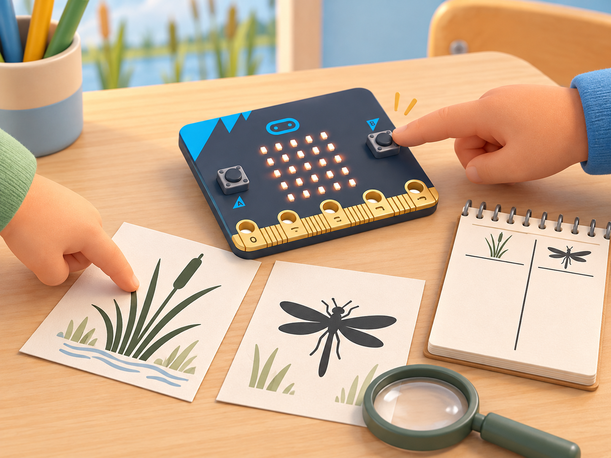
Fase 3 · Expliquem i registrem
Proveu cada botó tres vegades, agiteu la placa per consultar els dos totals i compareu-los amb un recompte manual en paper. Feu una prova amb zero, una observació i una observació repetida; decidiu com evitar comptar dues vegades el mateix indici. Anoteu espècie, lloc general (sense coordenades sensibles), data, font, criteri i si cada pressió ha incrementat només el comptador corresponent. Si useu fitxes, etiqueteu el registre com a simulat.
Fase 4 · Apliquem i millorem
Compareu les classificacions entre equips i reviseu una descripció ambigua. Diferencieu el nombre registrat de la presència real de l’espècie.
Fase 5 · Comprovem i reflexionem
Alerta de protecció del bosc (Anti-poaching collar)
Fase 1 · Activem i prediem
La proposta oficial parteix de la caça furtiva i planteja explorar com la tecnologia podria ajudar a protegir espècies. Consulteu una font de conservació i distingiu tres coses: què afirma la font, quines dades desconeixem i quina part es podria representar a l’aula sense acostar-se a un animal. No suposeu que hi ha caça furtiva al vostre municipi.
En una història fictícia d’una reserva, formuleu la pregunta: «Com podem avisar una persona responsable que s’ha activat un senyal de prova, sense afirmar que hem detectat cap perill?»
Fase 2 · Explorem i construïm
Feu una maqueta seca amb una silueta plana d’animal de cartó, una tira de paper al seu voltant —sense posar-la a cap ésser viu— i dues micro:bit: emissora i estació receptora. El botó A serà l’únic activador manual de la prova; la placa no incorpora un sensor que detecte caça furtiva. En MakeCode, programeu radio.setGroup(42) en totes dues plaques, envieu PROVA-ALERTA en prémer A i feu que la receptora mostre un símbol només quan rep exactament eixe missatge.
El text té menys de 19 caràcters, límit de radio.sendString. La ràdio funciona com un canal compartit: el mateix grup permet comunicar-se, però no xifra ni autentica el missatge.
radio.setGroup(42)
input.onButtonPressed(Button.A, function () {
radio.sendString("PROVA-ALERTA")
})radio.setGroup(42)
radio.onReceivedString(function (message) {
if (message == "PROVA-ALERTA") {
basic.showIcon(IconNames.Yes)
} else {
basic.showIcon(IconNames.No)
}
})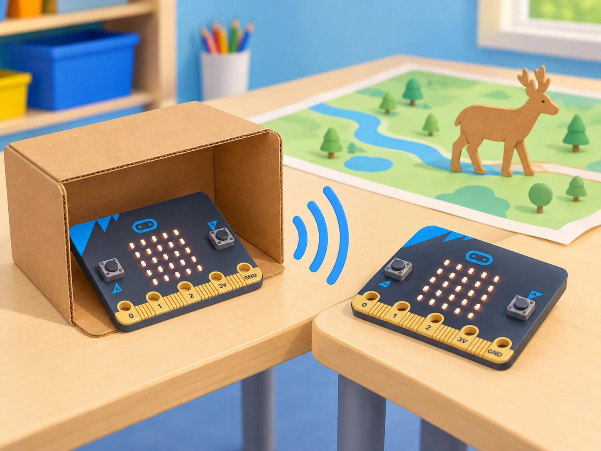
Fase 3 · Expliquem i registrem
Executeu tres intents per cas i registreu si la placa emissora envia, si la receptora mostra l’acceptació o el rebuig i quina condició heu canviat. Proveu: missatge correcte i grup igual; missatge desconegut amb el grup igual; missatge correcte amb un grup diferent; dos enviaments seguits; i cap pressió de botó. Anoteu «sense missatge rebut» quan no s’activa l’esdeveniment de recepció: no inventeu un temps de resposta ni interpreteu el silenci com a prova que tot està bé.
Compareu els resultats amb una taula de predicció i observació.
Fase 4 · Apliquem i millorem
Canvieu una sola condició cada vegada i depureu primer el cas de grups diferents; després, torneu al mateix grup i investigueu els missatges desconeguts i repetits. Afegiu una resposta visual clara per a «avís de prova rebut» i una altra per a «missatge no reconegut». La ràdio envia missatges als dispositius del mateix grup, però aquesta activitat no implementa confirmació de recepció garantida, xifratge ni control d’identitat.
Per això, qualsevol avís en el relat requeriria revisió humana i una via de comunicació validada; la maqueta mai no ordena una intervenció.
Fase 5 · Comprovem i reflexionem
Evidències: diagrama emissor–canal–receptor, programa amb el grup compartit, taula dels cinc casos amb tres repeticions i una explicació d’un límit tècnic i un límit ètic. La proposta adapta el repte oficial de crear una alarma sense reproduir-ne els materials; les històries, la maqueta i el codi són propis. El prototip només comunica una ordre manual de prova: no detecta caça, tala ni moviment, no localitza fauna i no garanteix que cada missatge arribe. No poseu dispositius a cap animal.
La lliçó oficial Anti-poaching collar presenta un repte de disseny amb ràdio per a alumnat de 7–11 anys; l’adaptació manté aquest focus i canvia el desplegament animal per una simulació escolar segura. Com a referència tècnica complementària, la guia oficial Investigating biodiversity mostra dos comptadors amb variables, botons A/B i una consulta separada dels totals; ací s’adapta aquesta mecànica per a dos comptadors etiquetats per l’equip, sense atribuir-la al codi de la lliçó original.
🌊 Repte 2 · Criatures marines
Adapta Saving sea creatures:
Xarxes més selectives (Light-up fishing nets)
Fase 1 · Activem i prediem
Llegiu la descripció oficial del repte i definiu captura accidental amb un exemple verificat: una xarxa captura una espècie diferent de la que es volia pescar. Situeu el cas en una llotja o port valencià fictici, sense atribuir-lo a una confraria concreta. En una graella, separeu què sabem per la font, què és una pregunta i què voldríem provar amb una maqueta. Pregunta guia: «Quin senyal podria mostrar una xarxa de prova quan la llum ambiental baixa?»
Fase 2 · Explorem i construïm
Construïu una xarxa de paper o cordill damunt d’una safata seca i feu servir fitxes planes per a representar espècies; no hi poseu animals vius ni acerqueu la placa a l’aigua. Programeu la lectura ambiental amb input.lightLevel() —la matriu LED fa també de sensor de llum— i comenceu amb el llindar oficial 50: si la lectura és menor, mostreu un patró de LEDs; altrament, esborreu la pantalla.
Llegiu la llum abans d’encendre el patró, perquè la mateixa matriu fa també d’entrada i d’eixida. Cada grup pot cobrir parcialment la placa amb una cartolina per simular menys llum, sense embolicar-la ni tapar-la completament.
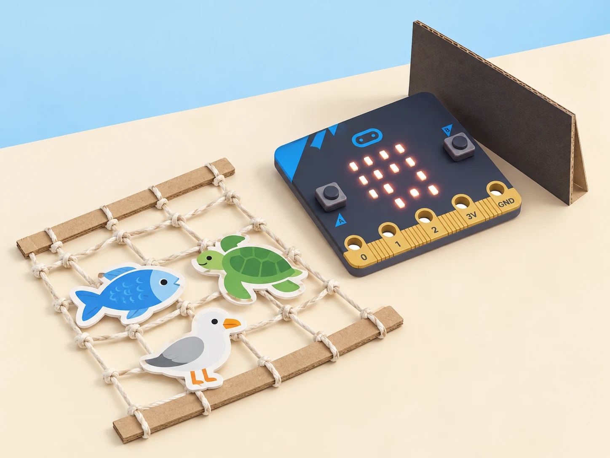
Fase 3 · Expliquem i registrem
Feu almenys cinc proves en cada condició: placa descoberta, parcialment ombrejada i coberta per la cartolina. Registreu la lectura 0–255, si és < 50, = 50 o > 50, el patró esperat, el resultat observat i si la pantalla s’ha esborrat quan tocava. Repetiu una prova pròxima al llindar i anoteu si la llum de l’aula fa variar la lectura. Si hi ha micro:bit V2 o un altaveu extern disponible, proveu el so com una eixida separada i opcional;
manteniu-lo silenciat per defecte i no l’activeu prop d’oïdes sensibles. V1 sense altaveu conserva el repte amb els LEDs.
Fase 4 · Apliquem i millorem
Compareu les proves entre equips i canvieu només una variable cada vegada: llindar, duració del senyal o patró LED. Si 50 activa el patró massa sovint o massa poques vegades en la llum del centre, proveu un valor nou i justifiqueu-lo amb les lectures, no amb una suposada profunditat marina exacta. El so que mostra el tutorial oficial és una idea de prototip; la classe no pot inferir d’aquesta maqueta que les llums o el so eviten captures reals.
Manteniu una versió sense so i assegureu que el senyal visual es pot distingir sense color.
Fase 5 · Comprovem i reflexionem
Evidències: maqueta seca, programa amb la condició, taula de cinc o més proves, font consultada i una comparació abans/després del canvi triat. Expliqueu què mesura la micro:bit, com es decideix mostrar o apagar el patró i quin resultat continua sense poder afirmar-se. No useu animals ni proveu res dins de la mar. El prototip no està validat per a pesca ni acredita que una llum o un so protegisquen fauna.
Platja segura per a tortugues (Sea safe turtles)
Fase 1 · Activem i prediem
Llegiu la proposta oficial: les cries de tortuga utilitzen la llum de la lluna per orientar-se cap a la mar, i els llums alts o brillants poden desorientar-les. Consulteu una font de conservació i anoteu quina afirmació prové de la font i quina és una pregunta del grup. Situeu el repte en una maqueta fictícia de camí costaner valencià, sense atribuir cap problema concret a una platja local. Predigueu quin senyal baix i discret podria orientar caminants sense imitar una lluna intensa.
Fase 2 · Explorem i construïm
En una maqueta seca, col·loqueu la micro:bit a nivell del camí, al costat d’una fitxa que represente una persona caminant. Llegiu la llum ambiental amb la matriu LED i useu input.lightLevel() < 100 com a llindar inicial oficial: en foscor, mostreu una icona pròpia de tortuga en la matriu; amb llum igual o superior a 100, esborreu-la. Preneu la lectura abans de mostrar la icona i repetiu el cicle cada dos segons, com en el projecte de referència.
No afegiu una llum alta, pampallugues ni una llanterna real; la pantalla és un indicador de maqueta, no un llum de camí homologat.
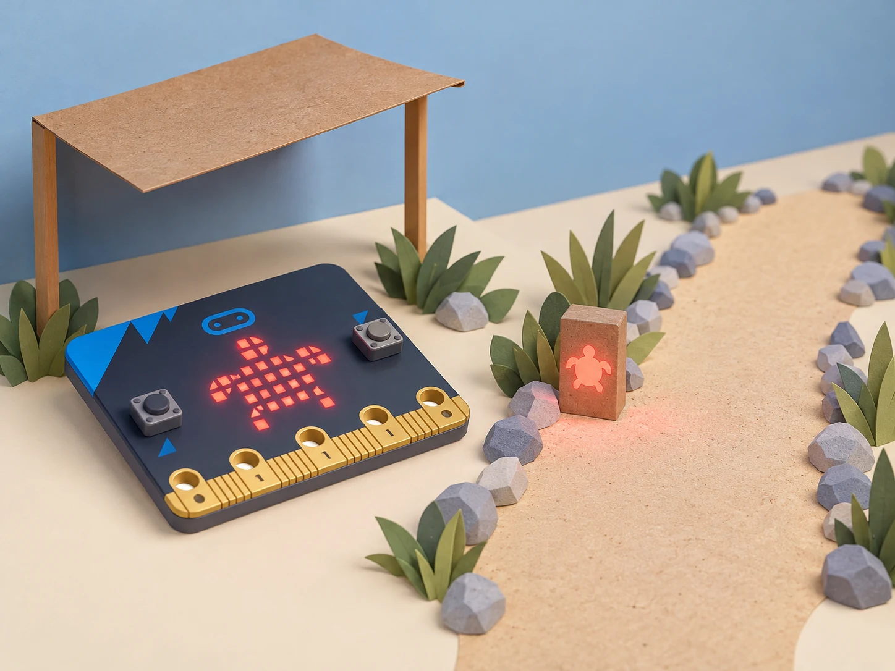
Fase 3 · Expliquem i registrem
Feu cinc lectures o més en cadascuna de tres condicions: placa descoberta, ombrejada i amb llum intermèdia. Anoteu 0–255, si la lectura queda < 100, = 100 o > 100, quin patró s’espera i si la pantalla queda fosca quan toca. Mostreu la icona a una altra parella i pregunteu què interpreta sense donar-li la resposta; registreu si veu la tortuga i si entén que és un símbol de maqueta, no una instrucció de caminar per una platja real.
Fase 4 · Apliquem i millorem
Si l’icona no s’entén, canvieu-ne un detall i torneu-la a provar; si la lectura activa la pantalla massa prompte o tard en la llum de l’aula, canvieu només el llindar i repetiu els casos propers al valor nou. Compareu un patró estàtic amb una opció sense llum, i justifiqueu quin comunica millor amb menys eixida lluminosa.
No compareu la intensitat LED de la placa amb una lluminària real ni afirmeu que una llum roja concreta és segura per a les tortugues: aquesta propietat no s’ha provat en la maqueta.
Fase 5 · Comprovem i reflexionem
Evidències: programa amb selecció < 100, icona pròpia, taula de lectures i una decisió argumentada entre patró, llum mínima o absència de llum. Expliqueu què mesura la placa, com es mostra o s’esborra la icona i quina afirmació de protecció no podem fer. El projecte és un prototip educatiu inspirat en la font, no una llum que protegisca tortugues ni una autorització per a intervenir en una platja.
🏃 Repte 3 · Activitat amb autonomia
Adapta Being active amb tres activitats:
Recordatori triat per l’usuari (Fitness friend)
Fase 1 · Activem i prediem
La proposta oficial demana dissenyar i provar un dispositiu wearable que recorde fer activitat física a intervals regulars. Adapteu la idea a una pausa voluntària durant una estona de treball: un avís pot oferir una opció de moviment suau, estirament assegut o descans, però no dir què ha de fer cada persona. Llegiu la descripció oficial i feu una llista de decisions de disseny: qui activa el recordatori, com el cancel·la, quin missatge apareix i quines dades no cal registrar.
Predigueu què ha de passar si ningú l’activa o si la persona prem el botó d’aturada.
Fase 2 · Explorem i construïm
Abans de programar, escriviu l’algorisme: inactiu en iniciar; A activa el temporitzador; quan transcorre l’interval de prova, mostra una icona breu; B l’atura i esborra la pantalla. Useu una placa sobre una taula o un suport de cartó com el de la imatge, no cal portar-la al cos. El valor de 10 segons del codi només facilita provar-lo a classe; cada usuari pot canviar l’interval i l’avís no prescriu exercici.
let enabled = false
let lastReminder = 0
let interval = 10000 // interval curt només per a la prova
input.onButtonPressed(Button.A, function () {
enabled = true
lastReminder = control.millis()
})
input.onButtonPressed(Button.B, function () {
enabled = false
basic.clearScreen()
})
basic.forever(function () {
if (enabled && control.millis() - lastReminder >= interval) {
lastReminder = control.millis()
basic.showIcon(IconNames.SmallHeart)
basic.pause(800)
basic.clearScreen()
}
basic.pause(100)
})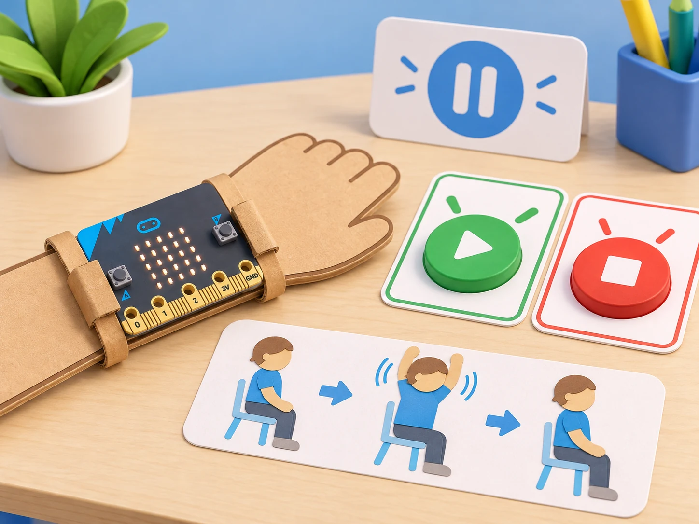
Fase 3 · Expliquem i registrem
Prepareu una taula de prova amb estat inicial, entrada, temps simulat, resultat esperat i resultat observat. Comproveu almenys: deixar el dispositiu inactiu; prémer A i esperar menys de 10 segons; esperar fins que aparega l’avís; prémer B abans de l’avís; prémer B després de l’avís; i tornar a prémer A després d’aturar-lo. Repetiu cada cas tres vegades i registreu si la pantalla queda apagada quan el sistema està inactiu.
Demaneu a una altra parella que interprete el missatge, sense demanar-li que faça cap exercici.
Fase 4 · Apliquem i millorem
Si el missatge sembla una ordre, canvieu-lo per una invitació que incloga l’opció «ara no». Proveu un interval diferent i calculeu quant tarda cada variant, però no compareu persones ni registres d’activitat. Depureu qualsevol cas en què B no ature el programa; reviseu també que reiniciar amb A comence un interval nou i que el recordatori no s’acumule quan el dispositiu estava aturat. El suport físic ha de deixar els botons accessibles i no atrapar la placa ni dificultar desconnectar la bateria.
Fase 5 · Comprovem i reflexionem
Evidències: algorisme anotat, programa amb temporitzador i control d’aturada, prototip de taula, resultats dels sis casos i una revisió del missatge després de rebre feedback. La font oficial tracta de wearables i recordatoris regulars; aquesta versió local transforma l’avís en una invitació cancel·lable amb alternatives equivalents. No mesura pols, moviment ni rendiment, no desa dades personals, no prescriu activitat física i no avalua qui participa. Consulteu les necessitats d’accessibilitat amb la persona usuària i manteniu sempre l’opció de no començar o parar.
Fitness friend és la primera activitat de la unitat oficial Being active.
Mesura crítica de pols (Heart rate monitor)
Fase 1 · Activem i prediem
La fitxa oficial planteja observar com activitats diferents poden afectar la freqüència cardíaca i dissenyar, provar i avaluar un prototip amb micro:bit. Convertiu el repte en una investigació de sistemes: quina entrada detecta el dispositiu, com filtra el senyal, quin càlcul fa i què mostra? Separeu «comptar esdeveniments d’una vibració de prova» de «mesurar el pols d’una persona». La micro:bit no incorpora un sensor cardíac; el seu acceleròmetre registra moviment.
Predigueu quines vibracions artificials podrien ser confoses amb un batec i quines conclusions serien injustificades.
Fase 2 · Explorem i construïm
Fixeu la placa en un suport estable de cartó sobre la taula i definiu un protocol de senyal conegut: primer 10 segons sense tocar res, després una sèrie de tocs lleugers al costat del suport i finalment silenci. No col·loqueu la placa sobre el cos ni colpegeu els components. Registreu l’acceleració en repòs i durant els tocs; trieu un llindar entre les dues distribucions només si les mesures se separen prou.
Si se solapen, anoteu que el sensor no discrimina el senyal amb fiabilitat. L’algorisme de mostra compta només el flanc de pujada, espera que el senyal baixe del llindar abans de tornar a comptar i converteix els esdeveniments d’una finestra de 10 segons en esdeveniments per minut (recompte × 6).
let threshold = 1050 // valor inicial de prova; calibreu-lo amb el vostre muntatge
let detected = false
let count = 0
let started = input.runningTime()
basic.forever(function () {
let signal = input.acceleration(Dimension.Strength)
if (signal > threshold && !detected) {
count += 1
detected = true
}
if (signal <= threshold) {
detected = false
}
if (input.runningTime() - started >= 10000) {
basic.showNumber(count * 6) // esdeveniments simulats per minut, no bpm
count = 0
started = input.runningTime()
}
basic.pause(20)
})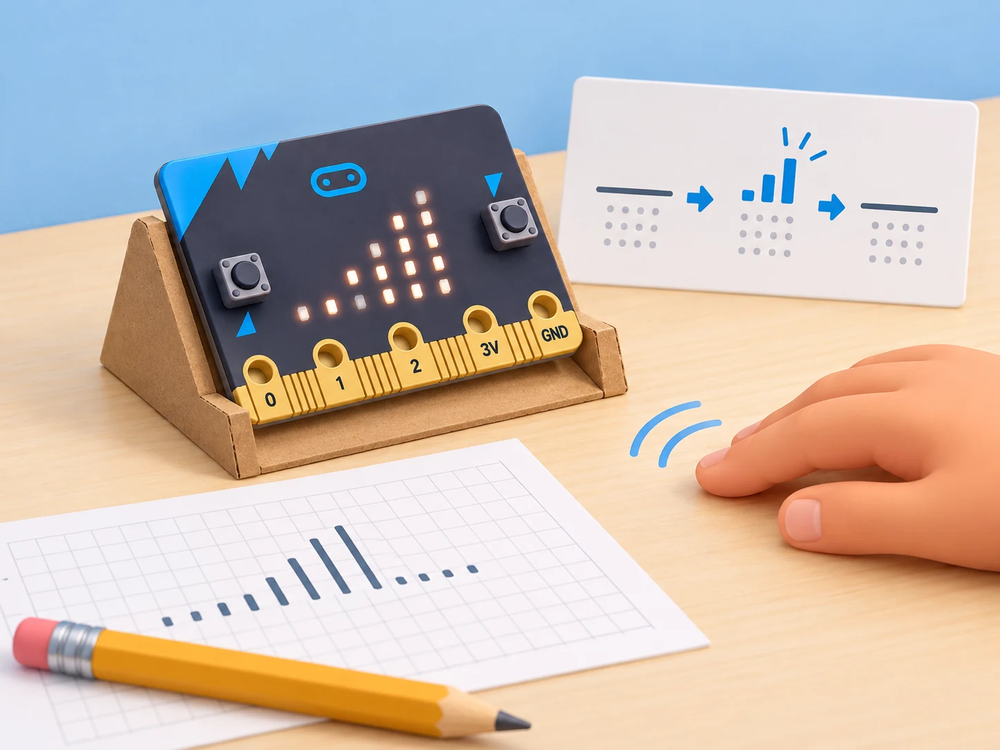
Fase 3 · Expliquem i registrem
Prepareu una matriu de proves amb cinc situacions: muntatge quiet durant 10 segons; 10 tocs lents coneguts; 10 tocs més ràpids; una sacsejada no periòdica; i una segona execució quieta després de moure el suport. Feu tres repeticions per cas i registreu el llindar, el nombre de deteccions, l’esperat, el resultat i els falsos positius/negatius. Compareu el recompte amb els tocs previstos i calculeu l’error absolut del model; escriviu el resultat com a «esdeveniments simulats per minut», mai com a bpm.
No mesureu el pols de companys, no feu l’activitat després d’exercici ni deseu dades biomètriques.
Fase 4 · Apliquem i millorem
Canvieu només el llindar o el temps de bloqueig entre deteccions, no tots dos alhora, i repetiu les proves lenta, ràpida i de sacsejada. Analitzeu el compromís: un llindar baix pot comptar soroll; un llindar alt pot perdre tocs menuts. Si els dos tipus de senyal continuen confonent-se, canvieu la conclusió i expliqueu que la maqueta no compleix un criteri de monitoratge. Com a exercici de dades, compareu sèries fictícies o una taula pública seleccionada pel docent, sempre amb origen identificat;
distingiu correlació, mostra i inferència, sense deduir salut individual.
Fase 5 · Comprovem i reflexionem
Evidències: diagrama entrada–procés–eixida, programa amb llindar calibrat, registre de cinc situacions amb tres repeticions i una decisió sobre si el model passa els criteris de prova. La proposta oficial demana explorar el cor i prototipar un monitor; aquesta adaptació manté el treball d’acceleròmetre, càlcul i display com a banc de proves amb vibracions simulades.
L’IET descriu, en un recurs tècnic complementari per a 11–14 anys, un prototip d’acceleròmetre, pantalla LED i càlcul aproximat, però cap de les dues fitxes converteix la placa en instrument clínic. El muntatge d’aula no mesura pols real, no avalua l’efecte de l’exercici en l’alumnat i no permet diagnòstics; no el porteu al cos ni publiqueu dades de salut. Heart rate monitor és la segona activitat oficial de Being active;
el recurs complementari de l’IET detalla el flux de disseny amb acceleròmetre.
Comptador d’un trajecte (Walking for water)
Fase 1 · Activem i prediem
Partiu de l’accés quotidià a l’aigua potable al centre i contrasteu-lo amb una font pública sobre infants que han de fer trajectes per a obtindre’n. La situació oficial Walking for water (7–11 anys) proposa dissenyar un comptador de passos; no convertiu eixa experiència en una cursa ni la compareu com si una ruta escolar valenciana fora equivalent. Pregunteu què pot mostrar un comptador i què deixa fora: disponibilitat, càrrega, terreny, temps i condicions de vida.
Fase 2 · Explorem i construïm
Construïu un comptador de polsos simulats amb la micro:bit. Cada pressió d’A representa una fitxa que avança una casella en un itinerari de paper entre l’aula i un punt d’aigua del centre; B reinicia el total. Aquest model permet practicar la variable i l’esdeveniment sense portar la placa al cos, caminar ni carregar aigua. No l’anomeneu mesurador de passos reals: el programa no llig el moviment de la persona.
let polsosSimulats = 0
input.onButtonPressed(Button.A, function () {
polsosSimulats += 1
basic.showNumber(polsosSimulats)
})
input.onButtonPressed(Button.B, function () {
polsosSimulats = 0
basic.clearScreen()
})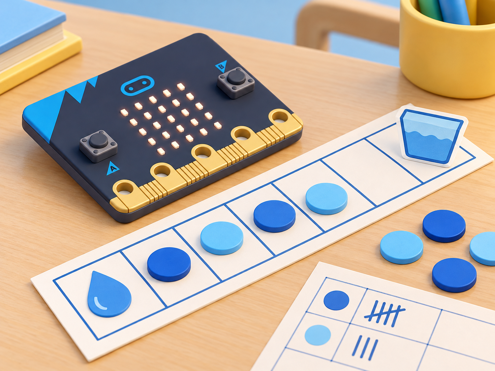
Fase 3 · Expliquem i registrem
Executeu quatre sèries de 0, 1, 5 i 10 polsos. Una persona prem A, una altra mou una fitxa per cada pressió i una tercera anota el recompte manual; després, consulteu el total amb B i compareu-lo. Repetiu una sèrie amb dues pressions seguides i comproveu que el programa suma dues entrades, no una distància ni un temps. Registreu cada resultat com a «polsos simulats».
Fase 4 · Apliquem i millorem
Reviseu dobles pressions i esborrats, i expliqueu què representa i què no representa cada pols simulat. Compareu el plànol del centre amb la informació de la font sense calcular distàncies o càrregues a partir del model. Connecteu el debat amb l’accés equitatiu a l’aigua potable sense dramatitzar ni representar físicament l’esforç d’altres infants.
Fase 5 · Comprovem i reflexionem
Evidències: codi funcional, quatre sèries de polsos simulats, comparació amb el registre manual, font consultada i una reflexió sobre allò que el comptador no mesura. La proposta adapta l’objectiu oficial de dissenyar un comptador i en canvia l’entrada per una simulació accessible; no afirma que mesure passos reals. No convertiu experiències de pobresa en joc ni feu competicions de distància. Walking for water és la tercera activitat oficial de Being active.
🌙 Repte 4 · Visibilitat i desplaçaments nocturns
Adapta Night safety en tres prototips:
Recordatori de visibilitat (Night sensor)
Fase 1 · Activem i prediem
El repte oficial demana comprendre els riscos de visibilitat nocturna i dissenyar un Night sensor que recorde «Be Safe: Be Seen». Llegiu la descripció de micro:bit Foundation i consulteu una font pública de seguretat viària. En una situació fictícia de camí escolar, distingiu visibilitat, il·luminació i seguretat: un senyal no evita col·lisions ni substitueix infraestructura, supervisió o elements homologats.
Acordeu tres criteris observables per al prototip de taula: activar-se amb un llindar acordat, mostrar un símbol fàcil d’identificar i poder comprovar en quines condicions falla.
Fase 2 · Explorem i construïm
Situeu la micro:bit sobre una maqueta de cartó al costat d’una bossa de paper; feu ombra amb una targeta, mai amb una llanterna potent apuntada als ulls. La lectura input.lightLevel() usa la matriu LED com a sensor aproximat de 0 a 255, no un sensor de llum separat. En V1 i V2, la placa i la seua orientació poden canviar la lectura; en V2 es pot cobrir la fila superior i obtindre una lectura pròxima a zero (detall tècnic oficial).
Buideu la pantalla abans de mesurar i feu una primera lectura d’escalfament, perquè la primera crida pot retornar zero. El llindar 80 d’aquest exemple és una elecció local de partida, que s’ha de calibrar a l’aula; no és una xifra oficial ni una norma de seguretat.
let llindar = 80
basic.clearScreen()
basic.pause(500)
input.lightLevel() // lectura inicial: pot retornar 0
basic.pause(200)
basic.forever(function () {
basic.clearScreen()
basic.pause(200)
let nivell = input.lightLevel()
if (nivell < llindar) {
basic.showIcon(IconNames.SmallDiamond)
basic.pause(700)
}
basic.clearScreen()
basic.pause(700)
})La icona només queda encesa breument després de cada lectura per no mantindre la matriu il·luminada mentre es torna a mesurar. Aquesta seqüència és una demostració de llindar, no una llum portàtil contínua ni un dispositiu per a circular.
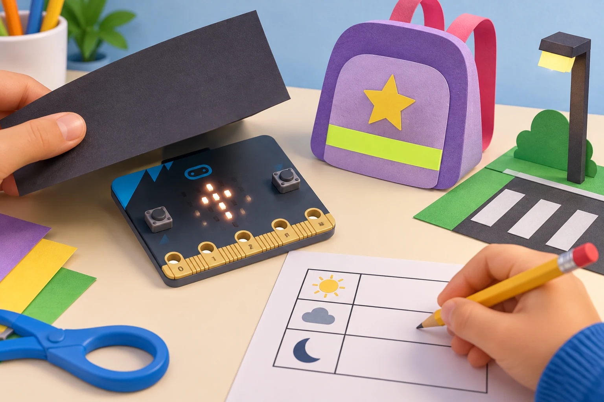
Fase 3 · Expliquem i registrem
Feu cinc lectures en cadascuna de tres condicions repetibles: llum de l’aula, ombra parcial amb cartó i ombra més ampla. Abans de cada intent, deixeu la pantalla apagada, espereu 200 ms i anoteu la lectura, l’estat esperat de la icona i el resultat observat. Afegiu dos casos de frontera: lectura igual al llindar i una pròxima per damunt. Compareu la icona amb una mostra de material reflector sota la mateixa llum;
registreu quina es veu millor des de tres costats del model i no confongueu una prova a poca distància amb visibilitat viària.
Fase 4 · Apliquem i millorem
Canvieu només una decisió per iteració: llindar, icona o duració de l’avís. Repetiu els mateixos casos i compareu falses activacions, absència d’avís i facilitat d’interpretació. Si la lectura canvia en girar la placa, documenteu l’orientació i expliqueu que la matriu LED també fa d’eixida. Demaneu a una altra parella que identifique què vol dir el símbol sense donar-li pistes. No proveu el prototip en una persona ni en un desplaçament real.
Fase 5 · Comprovem i reflexionem
Evidències: programa MakeCode, taula de quinze lectures amb condicions i orientació, comparació amb el reflector i una decisió de millora justificada per resultats. Expliqueu almenys dos límits: la lectura de la matriu és aproximada i sensible a la posició; una micro:bit no és un element homologat ni garanteix que una persona siga vista.
Roda visible en maqueta (Flashing wheels)
Fase 1 · Activem i prediem
La lliçó oficial proposa dissenyar, provar i presentar un prototip de llum intermitent per a millorar la visibilitat nocturna d’una persona usuària de cadira de rodes. Llegiu els seus objectius a Flashing wheels, consulteu criteris de disseny inclusiu i separeu què podem avaluar en una maqueta del que només pot valorar una persona usuària en context real. No demaneu a l’alumnat que simule una discapacitat ni parle en nom de persones amb experiències diferents.
Acordeu requisits de prototip: senyal distingible, control d’encesa/apagat accessible, absència de pampallugues ràpides i cap peça que puga tocar rodes o enganxar-se.
Fase 2 · Explorem i construïm
Construïu una roda i una estructura de cartó, amb una micro:bit fixada al suport de taula, no a una cadira real. En la versió base, la matriu mostra una icona durant un segon i queda apagada durant un segon; A activa la seqüència i B l’atura. Aquest patró lent és només per comparar dissenys en classe, no una recomanació per a trànsit.
Un LED extern és una ampliació opcional: només useu-lo amb resistor adequat, connexió revisada per una persona adulta i placa desconnectada durant el muntatge.
let activa = false
input.onButtonPressed(Button.A, function () {
activa = true
})
input.onButtonPressed(Button.B, function () {
activa = false
basic.clearScreen()
})
basic.forever(function () {
if (activa) {
basic.showIcon(IconNames.SmallDiamond)
basic.pause(1000)
basic.clearScreen()
basic.pause(1000)
} else {
basic.clearScreen()
basic.pause(100)
}
})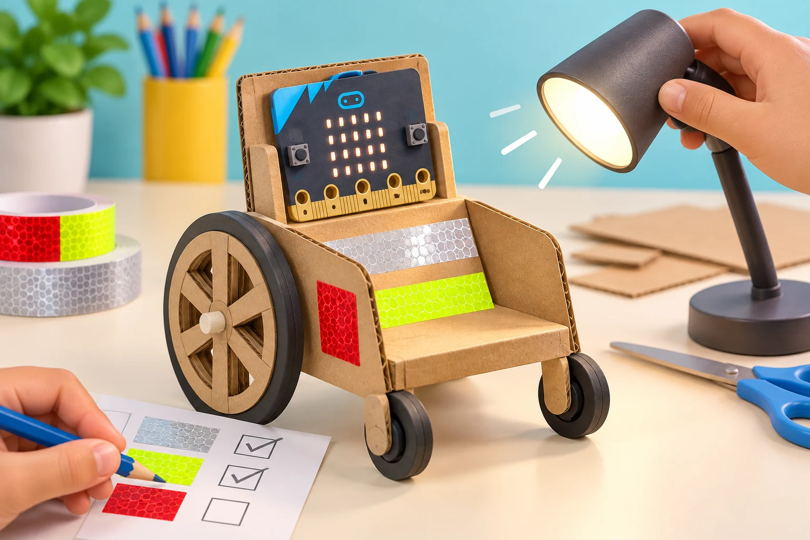
Fase 3 · Expliquem i registrem
Executeu cinc intents d’encesa amb A i cinc d’aturada amb B; anoteu si l’estat observat coincideix amb l’esperat. Situeu el model en tres orientacions i observeu la matriu des de davant, costat i darrere; repetiu amb llum ambiental diferent. Registreu visibilitat de la peça reflectora, senyal LED, estabilitat del suport i si es pot aturar sense moure el model. La prova mesura només la maqueta i el punt de vista de l’aula, no una distància de detecció en carretera.
Fase 4 · Apliquem i millorem
Compareu dues solucions: reflector sense codi i matriu programada amb reflector. Demaneu retorn a una parella que no haja construït el model; reviseu una característica per torn (posició, estabilitat, patró o control) i torneu a provar els mateixos casos. Si alguna persona necessita evitar llum intermitent, useu la versió estàtica o només el reflector. No augmenteu freqüència ni intensitat per a «guanyar» visibilitat.
Fase 5 · Comprovem i reflexionem
Evidències: prototip de cartó, programa amb controls A/B, taula d’encesa/aturada, registre de visibilitat en tres orientacions i canvi fet després del retorn. Presenteu què no s’ha provat: ús per una persona real, fixació segura, visibilitat a distància i adequació normativa. No s’utilitza en trànsit real ni representa l’experiència d’una persona usuària.
Bossa per a un trajecte (A bag for Juliane)
Fase 1 · Activem i prediem
La proposta oficial A bag for Juliane conta que Juliane, una xiqueta refugiada de Zimbàbue, ha arribat a Anglaterra i planteja dissenyar-li una bossa més visible per al camí a l’escola. Presenteu la història amb respecte, sense dramatitzar-la ni demanar a ningú que compartisca experiències pròpies de migració o refugi. Després, traslladeu el repte de disseny a un itinerari fictici de barri valencià: qui usa la bossa tria què necessita i pot rebutjar qualsevol funció.
Distingiu ajuda visual, reflector i mesures comunitàries de seguretat.
Fase 2 · Explorem i construïm
Creeu una bossa de paper o una mostra plana de tela, tres opcions reflectores i un suport de cartó per a la micro:bit. En el model base, A mostra una icona i B l’apaga: el senyal és una funció que l’usuari controla, no un rastrejador ni una balisa de localització. El reflector funciona sense placa i queda com a alternativa si el centre no té micro:bit disponible.
basic.clearScreen() // comença sense senyal actiu
input.onButtonPressed(Button.A, function () {
basic.showIcon(IconNames.SmallDiamond)
})
input.onButtonPressed(Button.B, function () {
basic.clearScreen()
})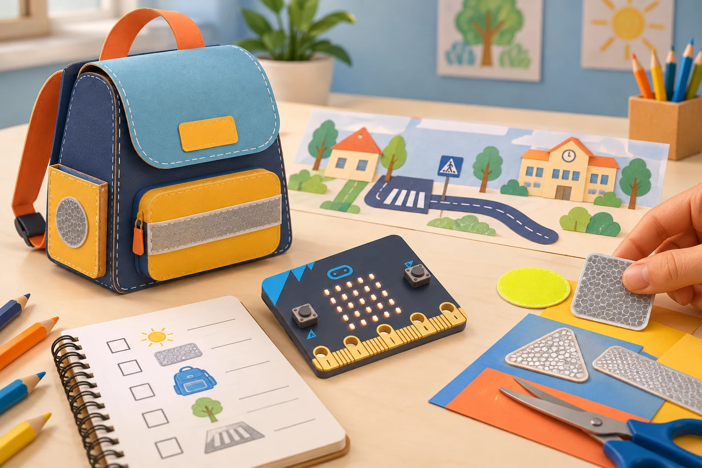
Fase 3 · Expliquem i registrem
En encendre la placa, comproveu primer que la matriu està apagada. Feu una prova de taula amb la bossa sense afegits, amb reflector, amb icona LED i amb reflector més icona. Des de davant, darrere i un costat, anoteu què es veu en llum d’aula i en ombra parcial, si A activa el senyal i si B l’apaga. Repetiu tres vegades i manteniu la mateixa distància i posició del llum; no useu foscor completa, persones en moviment ni llanternes dirigides als ulls.
Registreu també una limitació del disseny que no siga resoluble amb la placa, com ara el traçat, l’enllumenat o l’acompanyament.
Fase 4 · Apliquem i millorem
Una altra parella revisa si el senyal és recognoscible, si la persona fictícia conserva el control i si la bossa evita dades personals. Canvieu una sola peça —posició del reflector, mida del símbol o control— i repetiu la prova. Prepareu un missatge curt per a una audiència escolar que presente la millora sense prometre seguretat: compareu què pot fer un objecte individual i què depén de l’entorn, l’accessibilitat i les decisions comunitàries.
Fase 5 · Comprovem i reflexionem
Evidències: bossa de paper, programa amb activació i cancel·lació, matriu de resultats de quatre versions, retorn d’una parella i missatge públic amb límits. Preserveu el context de la història oficial sense convertir-lo en joc de rols: l’activitat escolar no resol la situació de refugi ni garanteix un trajecte segur. La seguretat depén també de l’entorn i de les responsabilitats col·lectives.
🐬 Repte 5 · Salut dels oceans
Adapta Healthy oceans i les activitats avançades:
Xarxa de sensors en maqueta (Ocean health monitor)
Fase 1 · Activem i prediem
La fitxa oficial proposa construir prototips de sensors sense fils per a representar l’onatge i l’oratge marí, entendre la transmissió de dades i situar els nodes dins d’una xarxa amb passarel·la. Connecteu el repte amb l’ODS 14 i mostreu un mapa esquemàtic de la costa valenciana, sense atribuir-hi cap lectura ni problema ambiental real. Cada equip rep valors ficticis (per exemple, «ona = 3» i «vent = 2», sense unitats físiques) i prediu quin registre hauria d’arribar a una estació receptora.
Fase 2 · Explorem i construïm
Construïu una xarxa de taula amb dues micro:bit com a nodes, una tercera com a passarel·la i un mapa de paper. Useu el mateix grup de ràdio, però noms de camp diferents per identificar les dades simulades. En MakeCode, el botó A envia una mostra manual: una placa envia ONA i valor 3; l’altra envia VENT i valor 2. La passarel·la rep el parell nom–valor i el mostra.
Els valors no tenen unitats ni provenen de sensors: el micro:bit no és per si mateix un sensor de marees, vent o temperatura marina.
radio.setGroup(42)
input.onButtonPressed(Button.A, function () {
radio.sendValue("ONA", 3)
})radio.setGroup(42)
radio.onReceivedValue(function (name, value) {
basic.showString(name)
basic.showNumber(value)
})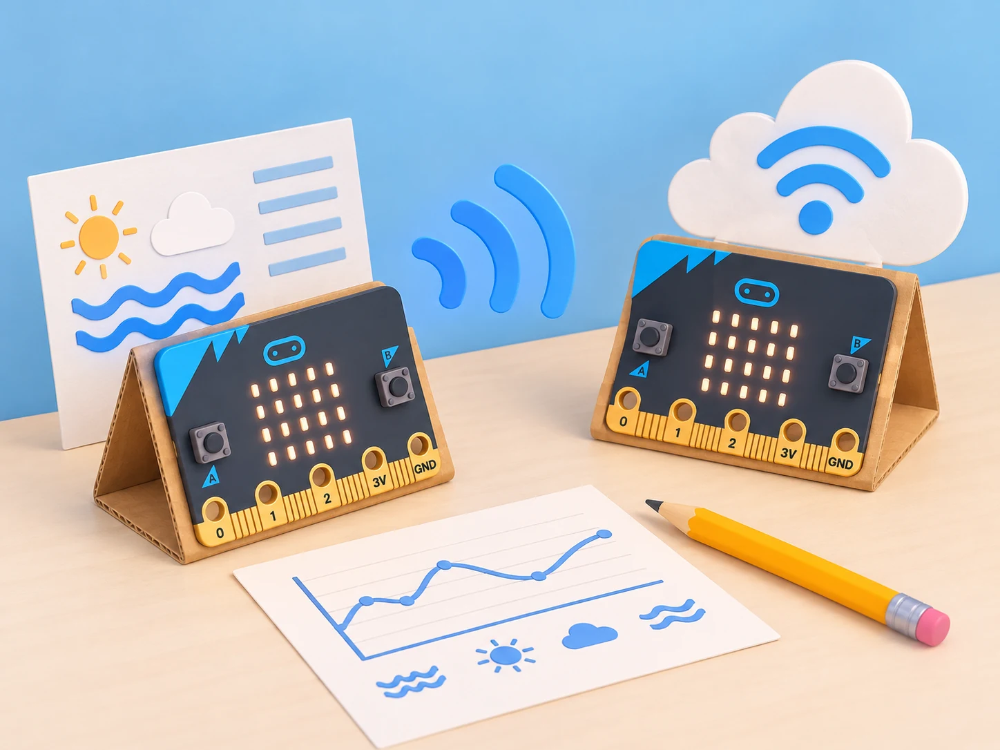
Fase 3 · Expliquem i registrem
Feu tres intents per cadascun dels dos nodes i anoteu en una taula: nom del camp, valor enviat, valor mostrat per la passarel·la, ordre de recepció i si el missatge s’ha rebut. Afegiu proves amb un nom desconegut, valors repetits, un node configurat en un grup diferent i cap pressió de botó. Compareu la predicció amb el resultat observat.
En el diagrama, traceu el recorregut «node → ràdio → passarel·la → representació d’Internet» i marqueu clarament que l’últim tram només és una maqueta de paper.
Fase 4 · Apliquem i millorem
Si els registres s’intercanvien o no arriben, reviseu el nom del camp, el grup i la seqüència d’assaig, canviant-ne un cada vegada. Afegiu a la pantalla de la passarel·la un indicador de «SIMULACIÓ» o una fitxa visible al costat de la placa perquè ningú confonga els valors amb mesures reals. Discutiu què necessitaria una instal·lació marina: sensor adequat, calibratge, alimentació, caixa resistent, comunicació de llarg abast i manteniment; una passarel·la real també requeriria connexió i un servei que emmagatzemara les dades.
No presenteu el diagrama com una xarxa desplegada ni publiqueu ubicacions de fauna.
Fase 5 · Comprovem i reflexionem
Evidències: esquema anotat de node, ràdio i passarel·la; programa emissor i receptor; registre dels cinc casos amb tres repeticions; i una explicació de quina part del sistema només està dibuixada. La font oficial descriu una activitat de nodes de dades sense fils connectats a passarel·les d’Internet; aquesta proposta n’adapta l’arquitectura a una maqueta seca i dades fictícies. Una xarxa real requeriria sensors ambientals externs, calibratge, energia, protecció contra l’aigua, connectivitat i manteniment.
La micro:bit i el prototip no mesuren l’oceà ni serveixen per a monitorar-lo. Ocean health monitor és la primera de les dues activitats oficials Healthy oceans, orientada a prototips de nodes sense fils per a l’onatge i l’oratge marí.
Ruta eficient per a una taca simulada (Oil spill cleaner-upper)
Fase 1 · Activem i prediem
La font oficial divideix Oil spill cleaner-upper en dues parts: primer, un repte d’algorismes per netejar una zona marina que es pot resoldre sense micro:bit ni maquinari; després, un disseny de vehicle autònom. Comenceu per la part desconnectada, que és completa per si mateixa. En una quadrícula de paper representeu una costa fictícia, una taca amb fitxes negres, un escull protegit amb una cel·la verda, un punt d’inici i una zona de recollida.
Acordeu els criteris abans de dibuixar rutes: visitar totes les fitxes, no entrar a l’escull, minimitzar moviments i, en cas d’empat, fer menys girs. Són criteris del model escolar, no una mètrica de neteja real.
Fase 2 · Explorem i construïm
Prepareu dues rutes diferents amb targetes de fletxes i escriviu-les també com a instruccions pas a pas. Un marcador de cartó representa el vehicle i una fitxa blanca seca, el material de recollida; l’alumnat mou el model només quan l’algorisme ho indica. No useu oli, aigua, detergents ni altres líquids.
Si el centre vol explorar un vehicle motoritzat, tracteu-lo com una ampliació separada: cal identificar abans el controlador, els motors, l’alimentació i la compatibilitat reals, i cap d’aquests accessoris s’atribueix a la placa micro:bit sola.
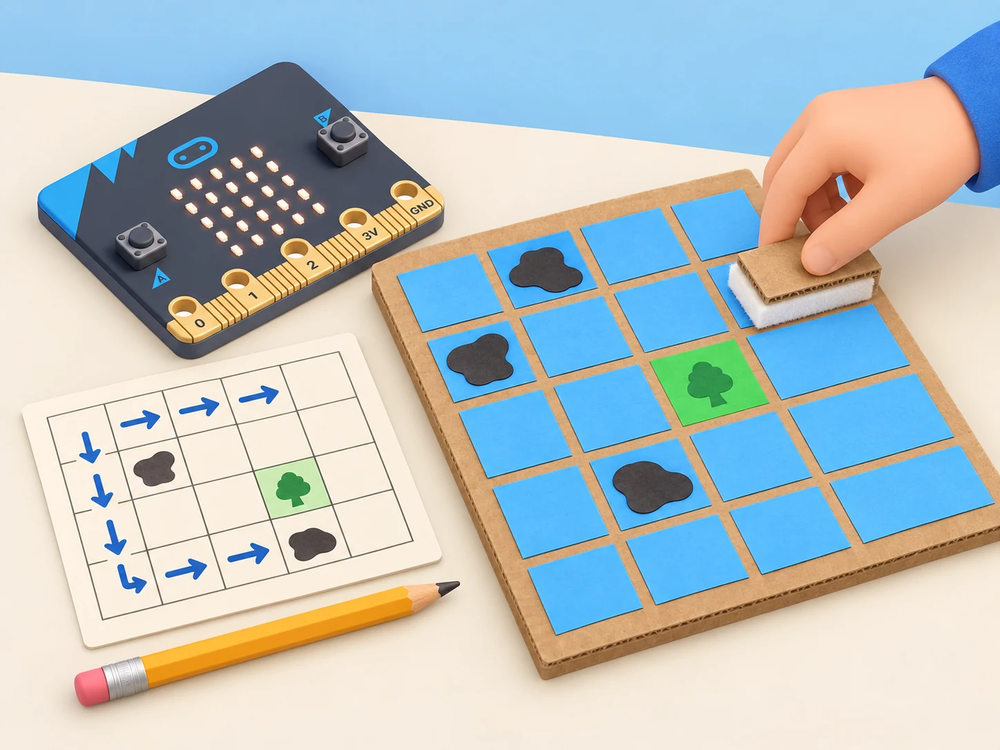
Fase 3 · Expliquem i registrem
Executeu cada ruta tres vegades amb la mateixa quadrícula i registreu, en una taula, l’ordre de les cel·les, les fitxes visitades, les repeticions, el nombre de moviments i els girs. Compareu la predicció amb el recorregut efectiu: l’algorisme cobreix totes les fitxes? Ha entrat alguna vegada a l’escull? Dues parelles poden executar la mateixa llista d’instruccions per comprovar si s’interpreta igual.
Marqueu qualsevol diferència com un error de seqüència o una ambigüitat, no com una errada de la persona que segueix les instruccions.
Fase 4 · Apliquem i millorem
Canvieu un sol element del mapa —per exemple, afegiu una cel·la prohibida o traslladeu una fitxa— i predigueu què passaria amb les dues rutes. Reviseu les instruccions si deixen una fitxa sense visitar, travessen l’escull o repeteixen moviments evitables; després torneu a executar-les amb els mateixos criteris. Compareu cobertura, moviments, girs i seguretat de la ruta en lloc de declarar un únic algorisme «millor» sense explicar per a quin objectiu ho és.
Si creeu una extensió motoritzada, valideu-la en una pista seca i tancada amb supervisió i parada accessible.
Fase 5 · Comprovem i reflexionem
Evidències: quadrícula anotada, dos algorismes executables, taula de tres intents per ruta, diagrama de flux d’una ruta revisada i explicació dels límits del model. La segona part de la font oficial proposa passar del disseny de l’algorisme a un vehicle autònom; ací queda com a extensió condicionada a maquinari real compatible i una validació de seguretat, no com una funció de micro:bit inclosa. Cap robot escolar es presenta com a resposta suficient a un vessament ni s’aboca cap substància.
Oil spill cleaner-upper és la segona activitat oficial Healthy oceans i permet separar la part d’algorisme de la construcció del vehicle.
🧪 Evidències i avaluació
Rúbrica compartida: comprensió del problema, qualitat de les fonts, algorisme, elecció de components reals, proves repetibles, cooperació i comunicació de límits. Avalueu també qui podria quedar exclòs, quines conseqüències no previstes hi ha i quina alternativa de baix cost o desconnectada existeix.
♿ Participació, accessibilitat i seguretat
No captureu dades personals ni biomètriques. No poseu dispositius a animals ni proveu prototips en carreteres, espais naturals sensibles o aigua. Useu LEDs sense pampallugues ràpides i atureu qualsevol activitat que incomode. Les necessitats de seguretat, salut i conservació s’han de consultar amb persones expertes i comunitats afectades; una maqueta escolar no és un producte validat.
🔗 Referents i adaptació
La col·lecció reinterpreta els reptes públics de Protecting animals on land, Saving sea creatures, Being active, Night safety, Healthy oceans i Helping plants grow. La sessió de xarxes s’ha contrastat també amb el projecte oficial Light-up fishing nets: manté la lectura de llum amb la matriu, el llindar inicial 50, la resposta LED i el so opcional, però situa la prova en una maqueta seca i comunica que no s’ha demostrat cap efecte sobre captures reals.
La de tortugues s’alinea amb el projecte Saving sea turtles: lectura de llum per la matriu, llindar inicial 100, icona de tortuga en foscor, esborrat de pantalla amb més llum i cicle de dos segons; la proposta local afegeix proves accessibles i declara que no valida una llum ambiental. Cada repte conserva el tema i el punt de partida descrits en les pàgines oficials, però canvia els escenaris, les dades, els materials i els prototips per al context local.
Els sensors ambientals, motors i altres accessoris s’identifiquen com a externs quan no formen part de la placa. Les activitats que requeririen desplegament real es resolen amb simulacions i maquetes segures.